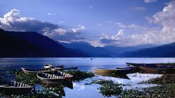
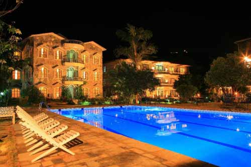

ITINERARY DETAIL OF POKHARA TOUR PACKAGE
1 days ago by Amrit
Itinerary Detail of Pokhara Tour Package
Day 01 : Kathmandu to Pokhara
Ride to Pokhara (approx 5hrs/200kms)
One hour boat travel along with visit of Barahi Temple
Overnight at the lodging in Pokhara
Pokhara
Pokhara is arranged at a rise of 915m above ocean level and 200m west of Kathmandu, the capital city of Nepal. The wealth of valley in unadulterated regular excellence is in reality one of the fundamental attractions to the guests from everywhere throughout the world. Simply envision the delight of watching the great Himalayas, three tops above 8000m from a height of underneath 1000m inside a nearby aeronautical, remove.The valley is similarly heavenly giving as they do hoisted close-ups to the cold pinnacles. The tranquility of Phewa Lake and the greatness summits like Machhapuchhre (Fishtail) (6977m) and the five peaks of Annapurna extend ascending behind it make a climate of harmony and enchantment. Pokhara is the place that is known for the Magars and Gurungs who have earned overall acclaim as Gurkha fighters. Brahmins, Chhetris and Thakalis are other major communities here.
Arrive at Pokhara and then transfer to Hotel Barahi
One hour boat ride at Phewa Lake along with visit of Barahi Temple
Phewa Lake
Phewa Lake, the second biggest lake in the nation, is the focal point of all fascination in Pokhara. It is the biggest and most captivating of the three lakes that add to the dazzling quality of Pokhara. Here, one can sail or row a hired boat across the lake to visit the island temple in its middle. The eastern shore, prevalently known as lakeside or Baidam, is the most loved command post for voyagers and is the place a large portion of the inns, eateries and craftsmanship shops are found.
Barahi Temple
The Barahi temple is the most vital landmark in Pokhara; Built nearly in the focal point of Phewa Lake, this two-storied pagoda is devoted to the boar manifestation of Ajima, the defender divinity speaking to the female power Shakti.Lovers can be seen, particularly on Saturdays, conveying male creatures and fowl over the lake to be yielded to the deity.
Leisure time or strolling around lakeside market
Lakeside
The eastern shore of Phewa Lake, prominently known as lakeside or Baidam, is the most loved homebase for voyagers and is the place the vast majority of the inns, resturants and workmanship shops are found.
Overnight at Hotel in Pokhara
Day 02 : In Pokhara
Outing voyage through Sarangkot for Sunrise View for sunrise over the Western Himalayas
Morning Breakfast at Hotel Barahi
Overall tour of Pokhara Valley
Overnight at Hotel Barahi
Sarangkot
Sarangkot is the most astounding point on the Pokhara valley edge. It is situated at height is 1592m above ocean level. This place gives the best perspective of Pokhara Valley, Phewa Lake and past to the principle spine of the Annapurna ranges (Annapurna South 7195, Annapurna I 7647, Machhapuchure 6997, Annapurna III 7555, Annapurna II 7937, Annapurna IV 7525, Lamjung Himal 6986.)
Morning Breakfast at Hotel Barahi
Overall tour of David’s fall, Gupteshwor Cave and Bindyabashini Temple
David's Fall
Locally known as the Patale Chhango (Hell's Fall). David's Fall (otherwise called Devin's and Devi's) is an exquisite cascade lying around two km south-west of the Pokhara air terminal on the Siddhartha Highway. Legend has it that a trekker named David was washed by the Pardi Khola and bafflingly vanished into an underground entry underneath the fall.
Gupteshwor Mahadev
Gupteshwor Cave is known as the Gupteshwor Gupha as well. The Gupteshwor Cave holds an extraordinary religious significance particularly to the neighborhood individuals. This linga is respected heavenly by the Hindus.The fundamental feature of the site is the Shivalinga, the phallic image of the Lord Shiva. The linga is safeguarded here in the condition it was found. It is right over the Devis Fall. From the finish of the surrender, you can see the perspective of Davis Fall.
Bindhyabasini Temple
Bindhyabasini Temple is the focal point of religious movement in the main bazaar. It is committed to Goddess Bhagawati, one more indication of Shakti. The recreation center like grounds offer a fine outing zone, and on Saturdays and Tuesdays when enthusiasts run there to offer sacrifices, go up against a merry neighborhood enhance
Drive back to Hotel Barahi
Spend night at Hotel Barahi
Day 03 : Pokhara to Kathmandu (By Road)
Morning Breakfast at Hotel Barahi
Drive back to Kathmandu
Lunch at the hotel
Transfer back to Pokhara Domestic airport for flight back to Kathmandu
Depart Pokhara for Kathmandu (from road)
Arrive Kathmandu, guest will be attended by our representative and taken to Hotel Shanker
Tour Package Cost Pokhara
Cost of the tour will be as follows (Per Person Cost on Room Sharing Basis)
2 Person (Car) USD 295
3-5 Person (Van) USD 280
6-10 Person(Hiace) USD 210
10-14 Person (Coaster) USD 190
Supplement Single Room - USD 58
Cost contains:
All visits and moves in a private cooled vehicle according to the schedule
Two bottles of mineral water per individual every day amid lengthy drive
Administrations of a neighborhood English talking guide in Pokhara
Extra charges of Pokhara's exercises as made reference to in the schedule
Convenience: 2 evenings at Hotel Barahi with breakfast in Pokhara
24.3% Service and VAT Charges
Cost Excludes :
Personal expenses (Tips, beverage, laundry, telephone call, etc)
Insurance in Travel
Dinner and lunch in Pokhara
Note :
The cost does exclude: undue acceleration in fuel costs, new charges requires on inns and transportation administrations or any climbs in extra charges. Any vast expense climbs and new imposes will be payable additional and will be charged as needs be with earlier notice.
CONTACT US organising your trip to Mustang
Email: info@tripnepal.lm / info@tripnepal.lm
CALL: 00977 1 44000999 OFFICE / 00977 9849-676757